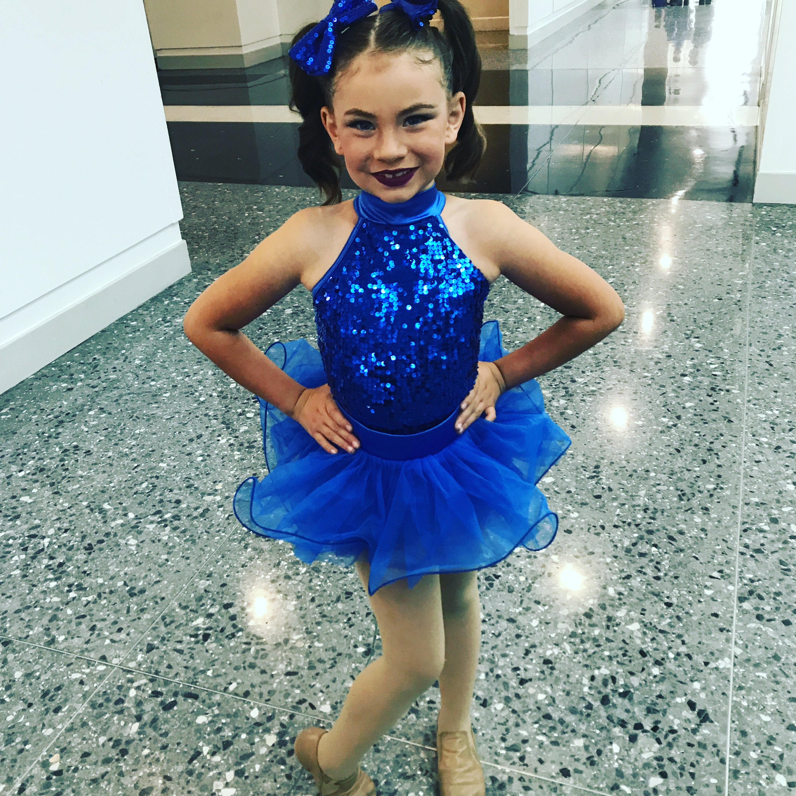
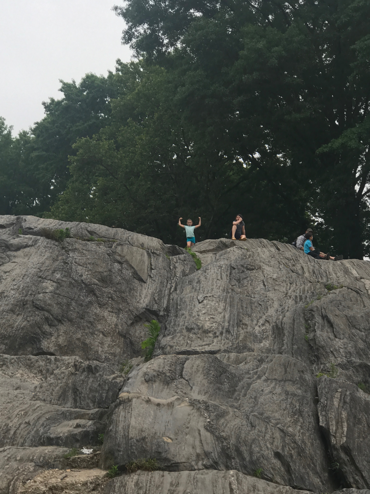
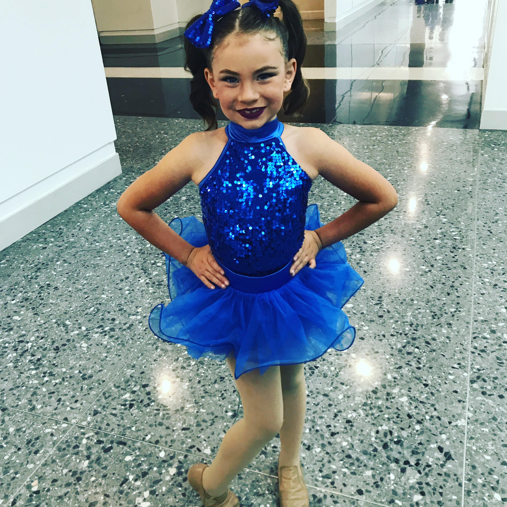
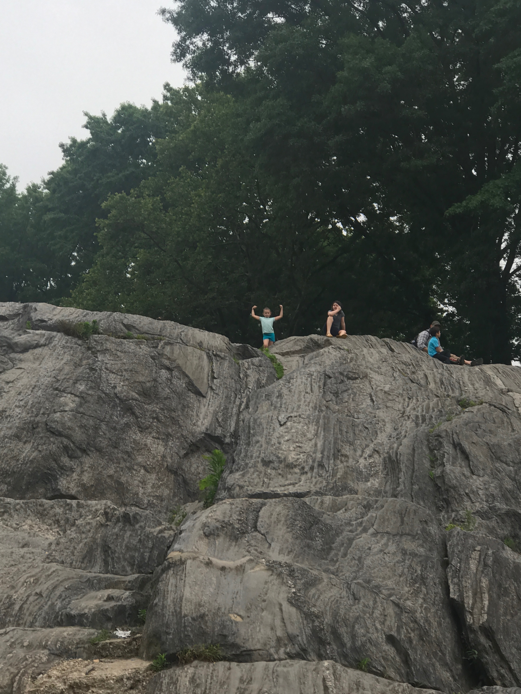
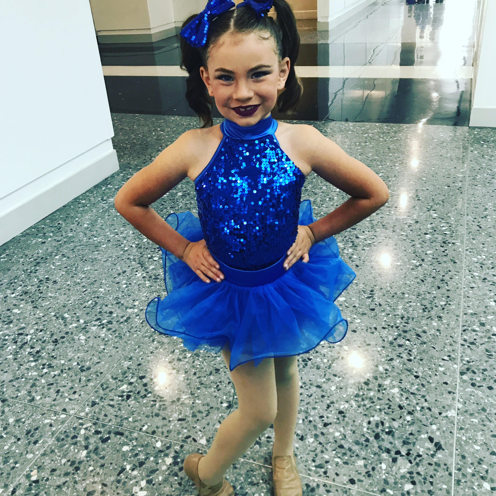
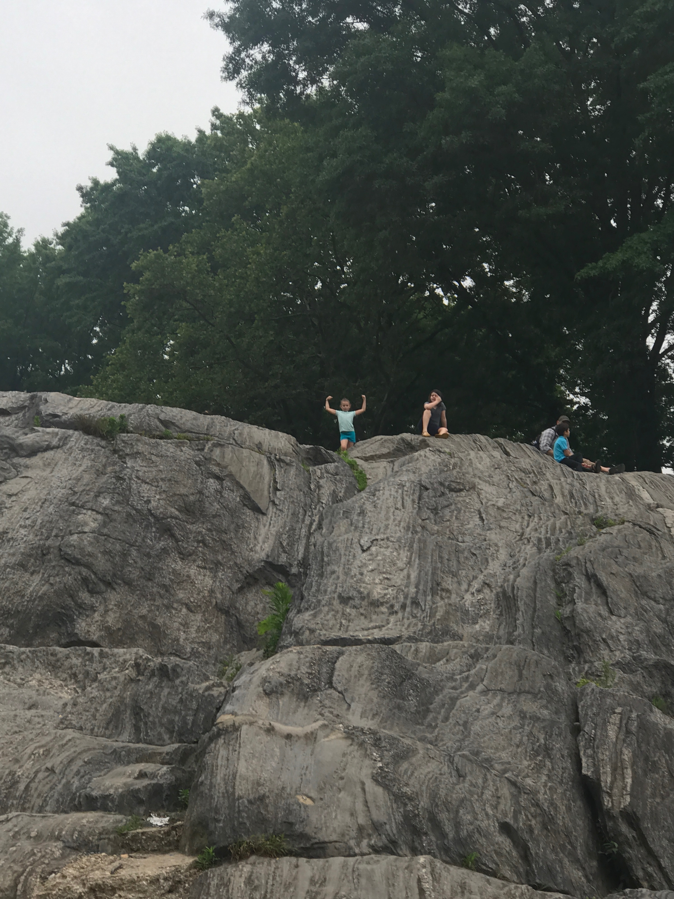

My name is Robyn Calzada and This is my about me page. I have been in the field of eduation for 14 years. I started in the prevocational setting as a paraeducator and then began teaching math in 2007. I have taght Algebra 1, Geometry, Algebra 2, Alebra Support, CASHEE prep, Intro to Stats and SMAP. SMAP is a course designed to make sure seniors are ready for College Algebra when they enter the JC. This coming school year I will add Computer Science Principals and Yearbook to my list of classes. I am also the Senior Class advisor. Last year was my first year running the senior class. Running Graduation is the biggest event I have ever put on. I have also been the SST coordinator and cheerleading coach.

